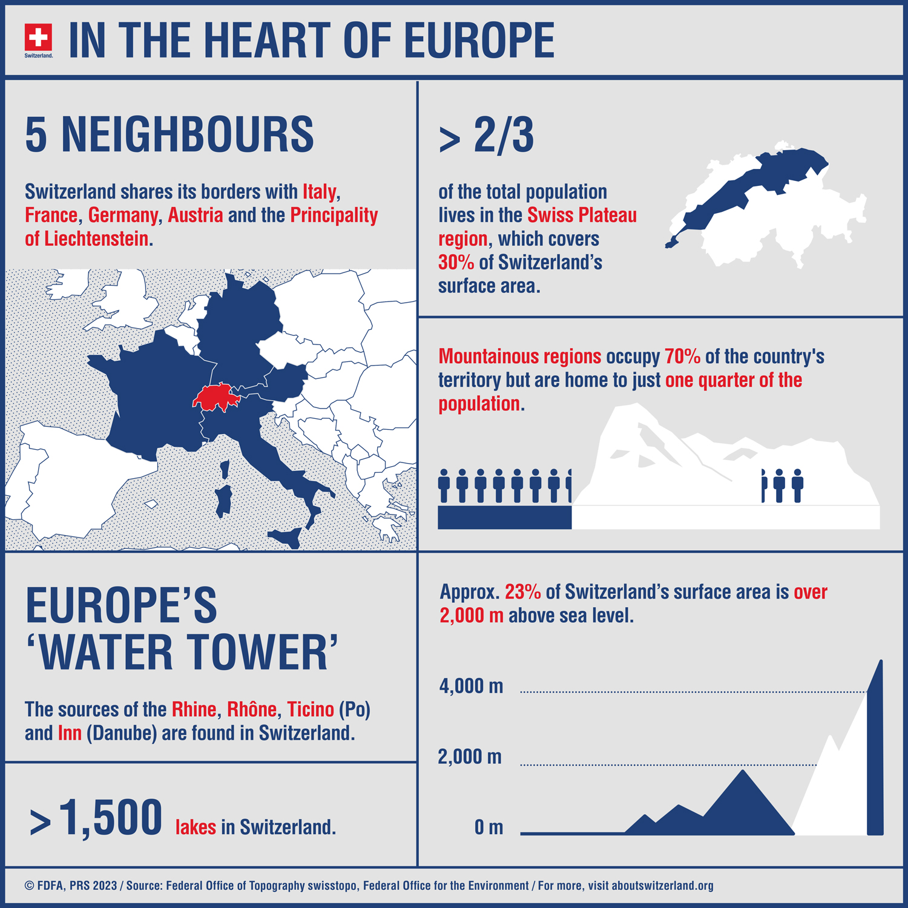

Some Facts About Switzerland
- Switzerland measures 220km from north to south and 348km from west to east
- Standing 4,634m above sea level, the Dufourspitze, part of the Monte Rosa massif, is the highest peak in Switzerland.
- The canton of Graubünden has more than 1,200 mountain peaks that are at least 2,000m high.
- Lake Maggiore, which is only 193m above sea level, is the lowest point in Switzerland.
- At 3,454m above sea level, the Jungfraujoch railway station is the highest in Europe.
- At 2,126m above sea level, Juf, in the canton of Graubünden, is Switzerland’s highest village.

- The Gotthard Massif a European watershed -Switzerland has around 61,000 kilometres of rivers and streams. The largest share is in the canton of Graubünden; the total length of its waterways come to around 11,000km.
- The highest mountain range in Europe -There are a host of reasons why the Swiss can be proud of their mountains. They have 48 peaks that are 4,000m or higher, a European record. At 4,634m above sea level, the Dufourspitze, part of the Monte Rosa Massif, is the highest of Switzerland's peaks
The country's natural scenery is out of this world and This country can definately make you feel like you are in Heaven.